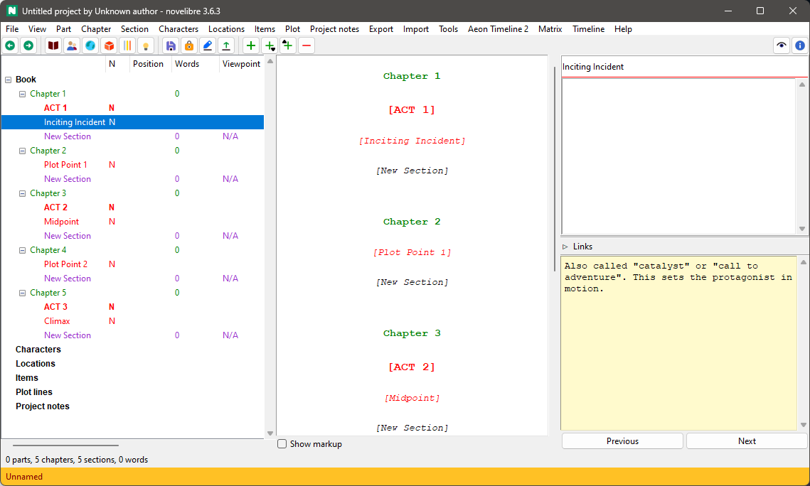

nv_templates
User guide
This page refers to the latest nv_templates release. You can open it with Help > Templates plugin Online help.
With novelibre, you can define a narrative structure with stages. See Plotting with novelibre. nv_templates faciliates the reuse of narrative structures.
The plugin adds a Story Templates entry to the novelibre Tools menu, a Create from Template… entry to the File > New submenu, and a Template plugin Online Help entry to the Help menu.
Important
The plugin comes with sample templates which are automatically copied into the templates folder of the novelibre installation. Existing files are overwritten. So if you customize your templates, better rename them.
Command reference
File > New
Create from template…
This creates a new project with the narrative structure from a Markdown template file.
First, a file select dialog asks for the new project’s file name (novelibre v1.4+). If you cancel the dialog, you can select the file name later when saving the project.
Then a second file select dialog asks for the template file to apply.
Tools > Story Templates
Load…
This loads the narrative structure from a Markdown template file.
A file select dialog asks for the template file to apply.
Save…
This saves the narrative structure to a Markdown template file.
A file select dialog asks for the new template’s file name.
Open folder
This opens the templates folder with the OS file manager, so you can manage and edit the templates.
Conventions
Markdown file structure
The Story Template Markdown file defines a narrative structure with the help of headings and ordinary text.
First level heading for top level stages, e.g. acts
The first level heading begins with #, followed by a space and a
stage title.
Second level heading for minor stages or turning points
The second level heading begins with ##, followed by a space and a
stage title.
Ordinary text
Any text under a heading is used as notes for the element generated from the heading.
Example
# ACT 1
Setup
## Inciting Incident
Also called "catalyst" or "call to adventure".
This sets the protagonist in motion.
## Plot Point 1
"Point of no return": The protagonist engages with the action
the inciting incident has created.
# ACT 2
Confrontation
## Midpoint
The main turning point. A significant event, changing the
development of things from good to bad, or vice versa.
## Plot Point 2
The aftermath of the Midpoint crisis.
What changes the protagonist from "passenger" to "driver".
# ACT 3
Resolution
## Climax
The final moment of the story's conflict.
This file generates the following structure in an empty project:
